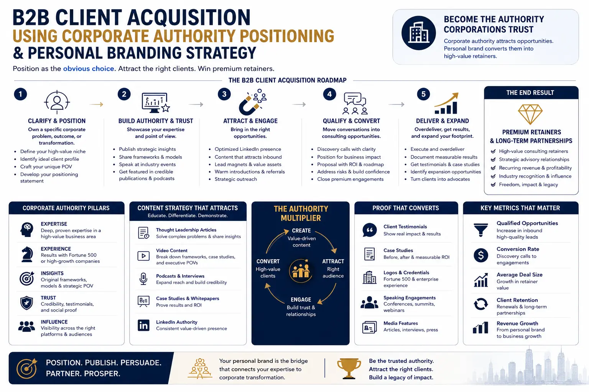
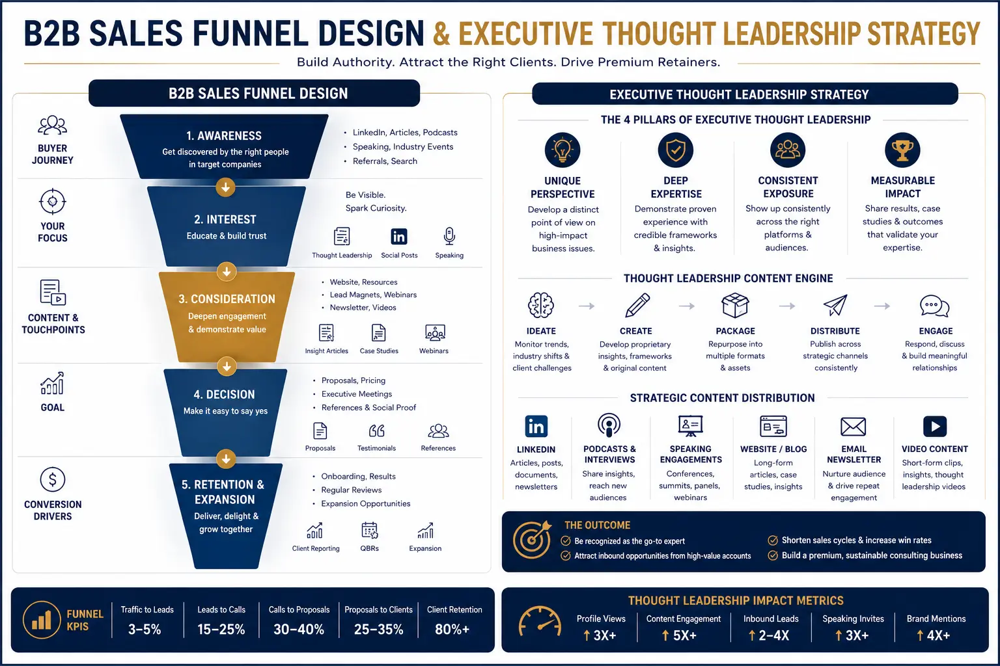

Structuring a Personal Branding Strategy to Attract Fortune 500 Consulting Retainers
The Enterprise Consulting Paradigm Shift
Selling high-value advisory services to Fortune 500 companies is one of the most challenging achievements in professional services. In this arena, transactional sales techniques, cold outreach emails, and standard corporate brochures fail to make an impact. Enterprise decision-makers — whether they are Chief Information Officers, Chief Marketing Officers, or VP-level executives — operate under intense organizational scrutiny. A failed consulting engagement at this scale represents not just a financial loss, but a significant threat to their careers. Therefore, their purchasing decisions are governed by risk mitigation. They do not buy consulting; they buy reassurance, certainty, and established expertise.
To successfully navigate this environment and secure premium consulting retainers, independent advisors and specialized consulting firms must deploy a comprehensive Personal Branding Strategy. By deliberately building your professional brand around the specific, high-stakes challenges of your target industry, you move from an unknown vendor to a trusted partner. Rather than competing in crowded procurement processes, you build a reputation that draws decision-makers directly to you. This is the foundation of modern High-Ticket B2B Client Acquisition.
Establishing a brand at this level requires much more than polished profiles or vanity metrics. It demands a deliberate system of Corporate Authority Positioning. You must structure your public profile, write thought leadership articles, package your frameworks, and design your sales process so that they all communicate corporate authority. In this comprehensive guide, we will explore the precise steps needed to structure an enterprise-ready personal brand that systematically attracts Fortune 500 advisory retainers.
The Foundation of Corporate Authority Positioning
Before writing a single post or updating a profile, you must define the core value proposition of your brand. Corporate Authority Positioning is the practice of establishing yourself as the leading voice on a specific, complex business problem. The goal is to make your name synonymous with a particular solution, ensuring that when an enterprise buyer encounters that problem, you are the obvious person to contact.
Generalists struggle to gain traction in the enterprise market. Fortune 500 companies do not hire general "strategy consultants" or "marketing advisors." They look for specialists who have solved their specific problem multiple times. Your Personal Branding Strategy must clearly define your narrow area of expertise. For instance, rather than positioning yourself as a "supply chain consultant," you should position yourself as "the expert on post-acquisition supply chain integration for global consumer goods companies." This clear focus immediately differentiates you from the competition and captures the attention of target buyers.
A key part of maintaining this position is corporate reputation management. When you advise global enterprises, your personal brand is evaluated alongside their corporate standards. Your digital footprint, public statements, and professional associations must reflect high standards of integrity and excellence. A robust corporate reputation management strategy ensures that your public image remains clear of negative associations, giving risk-averse corporate buyers the confidence to partner with you.
Aligning Thought Leadership with enterprise lead generation
Many consultants write thought leadership content, but very few know how to turn that content into revenue. The gap lies in the alignment between content creation and sales opportunities. An effective Executive thought leadership strategy must be designed to drive enterprise lead generation. It is not about generating viral views; it is about building trust with a select group of qualified decision-makers.
Your Executive thought leadership strategy should focus on the strategic, operational, and regulatory changes that keep C-suite executives awake at night. Instead of sharing basic tips or personal stories, write about macro-economic shifts, industry regulations, technological disruptions, and organizational design. Use proprietary data, case studies, and research to support your points. When a VP of Operations reads an article that accurately describes their current challenges and offers a clear, data-driven path forward, they view the author as a peer, not a vendor.
This positioning makes enterprise lead generation much more efficient. Instead of chasing leads, you invite inbound inquiries from executives who are already convinced of your expertise. When a global director searches for solutions to their challenges, your content should appear as the authoritative answer. If they search for specialized help, they should find your name, even when looking for a personal brand consulting near me to support their internal leadership teams.
Minimized Buying Risk
A structured Personal Branding Strategy acts as a pre-vetted proof of capability. When risk-averse Fortune 500 buyers see your published research and industry-wide recognition, their perceived risk of hiring you drops significantly, easing the procurement process.
Bypassing Gatekeepers
Strong Corporate Authority Positioning establishes you as an industry peer. This authority helps you bypass gatekeepers in HR and procurement, allowing you to start sales conversations directly with C-suite decision-makers.
Premium Fee Justification
By packaging expert knowledge into proprietary diagnostic tools, frameworks, and methodologies, you move away from commoditized hourly rates and easily justify six-figure annual consulting retainers.
Inbound Pipeline Velocity
Aligning your Executive thought leadership strategy with target channels creates a consistent flow of inbound inquiries, dramatically accelerating your pipeline for High-Ticket B2B Client Acquisition.

packaging expert knowledge for Premium Retainers
One of the biggest challenges consultants face when moving upstream to enterprise clients is pricing. If you sell your services by the day or the hour, you limit your earning potential and commoditize your work. To win premium retainers, you must master the art of packaging expert knowledge. You must turn your experience, methods, and insights into structured intellectual property that the client can easily evaluate.
packaging expert knowledge means creating proprietary frameworks, diagnostic assessments, and strategic playbooks. Instead of offering generic "consulting support," you offer a structured process, such as a "90-Day Operational Diagnostic," followed by a "Strategic Transformation Roadmap," and supported by an "Implementation Governance Retainer." This approach shifts the client's focus from the time you spend working to the value you deliver.
This structure makes it much easier for enterprise buyers to approve your fees. Corporate budgets are approved based on projects and outcomes, not hours. When you present a structured framework, procurement departments see a clear, manageable scope of work rather than an open-ended hourly expense. This structured approach is essential for securing long-term, high-value consulting retainers.
Structuring a B2B Sales Funnel for the C-Suite
A typical online sales funnel — consisting of a lead magnet, an automated email sequence, and a pitch deck — does not work for C-suite executives. Fortune 500 leaders do not sign up for free ebooks or read promotional email campaigns. Your B2B sales funnel design must reflect how executives actually make decisions. It must be highly personalized, professional, and built on mutual respect.
At the top of your funnel, you need peer-to-peer discovery. This involves executives encountering your ideas through key industry events, reading your articles in executive publications, or receiving your research reports. The goal is to build initial trust without asking for a meeting.
The middle of the funnel should focus on high-value, low-friction interactions. Instead of a sales call, invite target executives to a private, invite-only roundtable, or offer them a custom benchmark report comparing their company to industry peers. This approach allows you to show your expertise in a collaborative setting, making it a natural transition to the bottom of the funnel.
The bottom of the funnel should be a collaborative diagnostic session. By reviewing their current challenges and suggesting high-level solutions, you naturally position your ongoing advisory services as the next step. This structured B2B sales funnel design is the key to closing high-value engagements and accelerating High-Ticket B2B Client Acquisition.
LinkedIn Executive Presence
Your LinkedIn profile is your digital home. It should be structured as an authority platform, focusing on the outcomes you deliver and the problems you solve, rather than reading like a standard CV.
Proprietary White Papers
Publishing deep, data-driven research papers on industry trends builds credibility. It shows you have a deep understanding of corporate challenges, supporting your enterprise lead generation.
Exclusive Roundtables
Hosting small, private discussions for senior leaders allows you to build peer-to-peer relationships, which is a powerful way to win high-ticket consulting retainers.

corporate reputation management in Enterprise Retainers
As your visibility grows, so does the need for careful brand management. When a Fortune 500 company hires you, your personal brand reflects on their organization. Therefore, ongoing corporate reputation management is a key part of your personal brand architecture.
This involves regularly auditing your digital presence, ensuring all public comments align with professional standards, and proactively managing search results. If an executive searches your name and finds inconsistent messaging or unprofessional content, it can derail the deal. corporate reputation management also means having a plan to address negative feedback and highlight positive case studies.
In addition, maintaining your reputation helps you retain clients over the long term. Enterprise retainers are kept because the consultant continues to deliver value and remains a trusted advisor. By protecting your professional reputation, you reassure your clients that working with you is safe, stable, and beneficial for their brand.
Finding Local Expertise: personal brand consulting near me
While digital platforms allow for global reach, many consultants and executives prefer local partners to guide their branding. Searching for personal brand consulting near me connects you with experts who understand both local business culture and global market standards.
A local agency can provide hands-on support for visual branding, photography, video production, and content writing, helping you create a unified professional image. Partnering with a specialized team, like The PhD Ads in Madurai, ensures your brand has the strategic depth and polished design required to attract global enterprise clients.
FAQ
1. What is Corporate Authority Positioning and why is it essential for attracting Fortune 500 consulting retainers?
Corporate Authority Positioning is the strategic practice of establishing an individual consultant or expert as the leading voice on a specific, high-stakes corporate challenge. It is essential for attracting Fortune 500 consulting retainers because enterprise decision-makers at this level do not hire generalists or run typical procurement processes for high-ticket advisory work. They seek out recognized experts who demonstrate a deep, authoritative understanding of their industry's problems. A structured Corporate Authority Positioning strategy ensures that your thought leadership, corporate reputation, and case studies are highly visible to enterprise buyers, making you the obvious choice when they need strategic consulting.
2. How do you align Executive thought leadership strategy with enterprise lead generation?
Aligning Executive thought leadership strategy with enterprise lead generation involves creating high-value content that directly addresses the strategic, operational, or compliance challenges faced by enterprise executives. Instead of publishing generic tips, write white papers, publish industry-specific case studies, and share expert insights on platform trends. By ensuring your content solves complex problems, you build credibility and attract inbound queries from Fortune 500 decision-makers, turning thought leadership into a powerful tool for enterprise lead generation.
3. What does packaging expert knowledge look like for premium B2B consulting retainers?
Packaging expert knowledge for premium B2B consulting retainers involves converting your specialized consulting expertise, workflows, and methodologies into structured, intellectual assets (such as frameworks, diagnostic audits, and strategic playbooks). Instead of selling "days" or "hours" of consulting, you sell a structured solution to a specific corporate problem. This makes it easier for enterprise clients to buy, justifies premium pricing, and enables you to scale delivery without billing for time.
4. How do you structure a B2B sales funnel design to bypass gatekeepers?
Structuring a B2B sales funnel design to bypass gatekeepers requires leveraging peer-to-peer authority channels rather than traditional cold outreach. This means using executive thought leadership, publishing high-value research reports, and speaking at exclusive industry events to attract enterprise decision-makers directly. When a Fortune 500 executive reads your insights and reaches out directly for personal brand consulting near me or strategic advisory, you bypass the gatekeepers and enter the sales process at the highest level.
Key Topics
Ready to Structuring a Personal Branding Strategy that Attracts Fortune 500 Retainers?
At The PhD Ads in Madurai, we specialize in helping elite consultants, advisors, and founders build powerful personal brands. We help you design a comprehensive Personal Branding Strategy that positions you as a leading voice, aligns your Executive thought leadership strategy with your business goals, and structures a premium B2B sales funnel design to attract global corporate clients.
Email: team@e2o.in